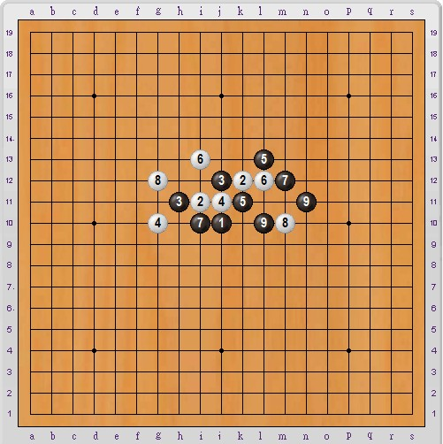
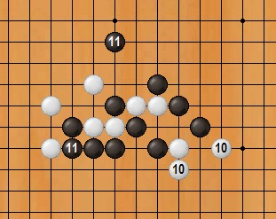
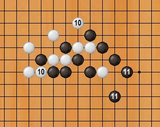
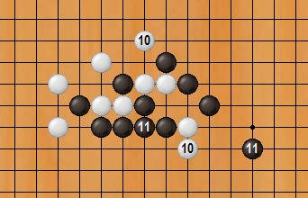
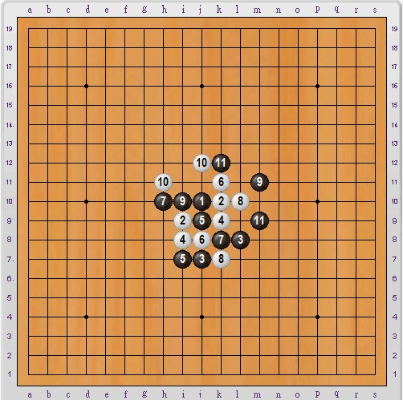
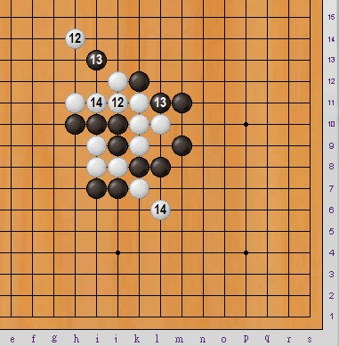

双线五子棋主要靠抓禁取胜，可以说到了中盘，禁手无处不在。
规则介绍： ShowPost.asp?ThreadID=11244
在线对弈： http://www.renrousousuo.com/DoubleLine.aspx
以下两个抓禁瞬间，个人觉得还不错，跟各位分享下

黑9是妙手，已经必胜，后面请见变化图：

白10若挡这边，黑11抓禁。注意：白10不可同线。

白10若挡另一边，黑11抓禁；

同样黑11抓禁。白10无论怎么防都是徒劳。
下图黑11应该挡i13，由于失误，白12已经必胜。
请各位先自己看看，能否找出抓禁的办法？

答案：
白12冲四活三，黑13被逼无奈（不能挡活三的中间或另一边），白14抓禁胜。

双线五子棋有一些抓禁是非常奇妙的，而且抓禁范围大，隐蔽性高，很适合喜欢抓禁的棋友。
［此帖子已被 日出333 在 2010-12-12 0:43:27 编辑过］
引用：
原文由 小帮帮 发表于 2010-12-12 9:42:26 :
经典啊，双线五子棋也应该好好推广，去跟腾讯谈，让他们程序员做程序，放在五子棋下面做一个分支也好啊
如果可以的话当然好，可腾讯是不会收录没人气的棋牌游戏的。。